Email / CV / Bio / LinkedIn / Scholar / Twitter / Github
I am a data scientist for Jacobs working in NASA's Earth Science and Remote Sensing Unit (ESRS) at Johnson Space Center. I specialize in machine learning and computer vision, with a focus on enhancing the Gateway to Astronaut Photography of Earth archive and automating image analysis tasks on the ISS and for lunar exploration. I enjoy collaborating on computer vision solutions to problems at JSC and across NASA. I'm currently one of the core the maintainers of Image Matching Modules.
I have a Masters in Computer Science from UT Austin and bachelor's degrees in Physics, Math, and Economics from the University of Arizona.
| 10/2024: | Image Matching Modules (IMM) hits 250 stars on Github. |
| 08/2024: | Presentation at ISS Research and Development Conference by group lead Kent Fisher about our Explore Photos project, where I was lead developer |
| 06/2024: | Attended CVPR 2024 with 1 main conference, 2 workshop papers. |
| 03/2024: | Released Explore Photos, an interactive map for viewing astronaut photography. |
| 02/2024: | Awarded JETSII contract annual award for Continuous Improvement of ISS CEO Operations. |
| 01/2024: | 3 abstracts accepted to Lunar and Planetary Science Conference (LPSC) 2024. |
| 11/2023: | Talk at The International Workshop on AI-Powered Space. |
| 06/2022: | Article in ISS Benefits for Humanity about our work applying computer vision to astronaut photography to benefit those on Earth. |
| 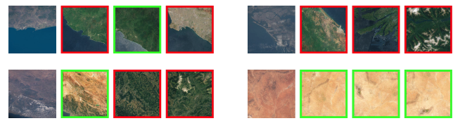 |
EarthLoc: Astronaut Photography Localization bt Indexing Earth from Space
Gabriele Berton, Alex Stoken, Barbara Caputo, Carlo Masone CVPR, 2024 project page / arXiv / code Retreival based approach to astronaut photography localization. |
| 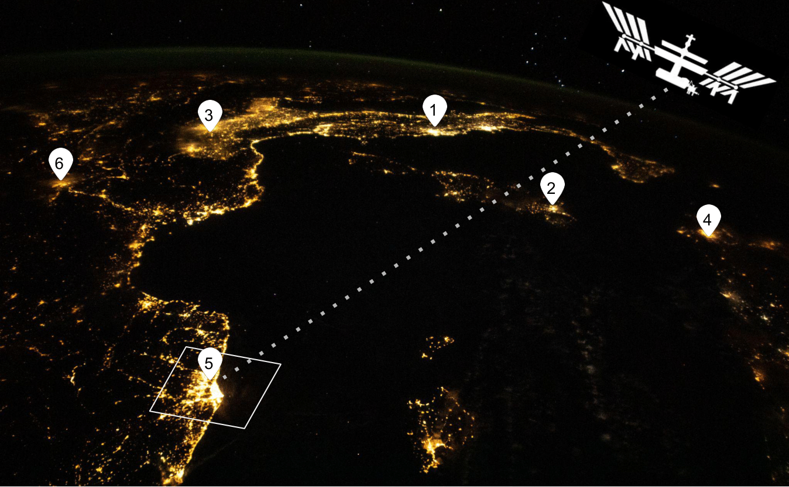 |
(Street) Lights Will Guide You: Georeferencing Nighttime Astronaut Photography of Earth
Alex Stoken, Peter Ilhardt, Mark Lambert, Kenton Fisher CVPR EarthVision Workshop, 2024 project page / pdf Localization of nighttime astronaut photos by pairwise comparison with harmonized streelight and satellite data. |
| 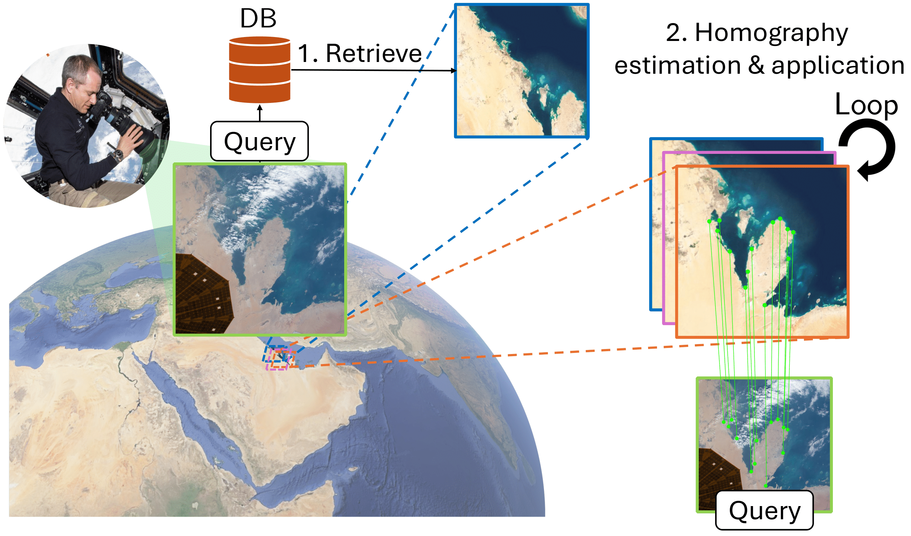 |
EarthMatch: Iterative Coregistration for Fine-grained Localization of Astronaut Photography
Gabriele Berton, Gabriele Goletto, Gabriele Trivigno, Alex Stoken, Barbara Caputo, Carlo Masone CVPR Image Matching Workshop, 2024 project page / arXiv / code Pixel-wise matching of Astronaut photographs by way of iterative homography refinement. |
| 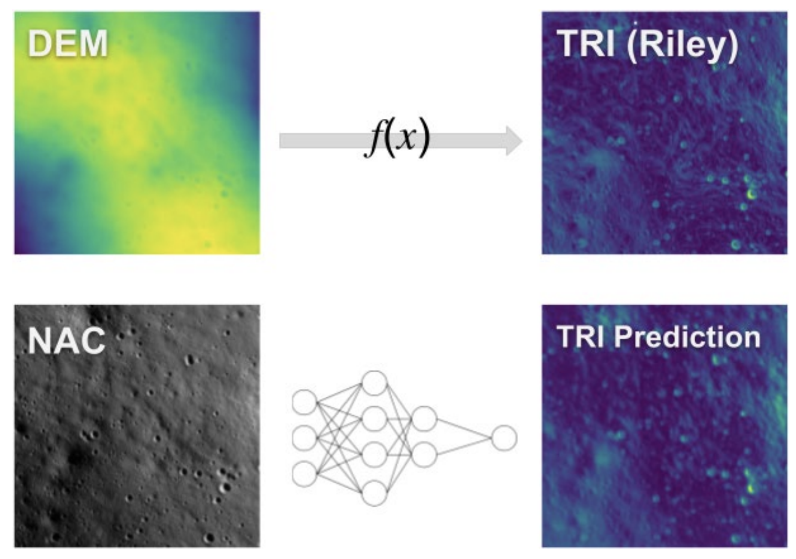 |
Learning Terrain Ruggedness from LROC NAC Image Data
Alex Stoken, Peter Ilhardt, Andrew Britton Lunar and Planetary Science Conference, 2024 Learn pixel-wise terrain roughness directly from image data - no DEM needed! |
| 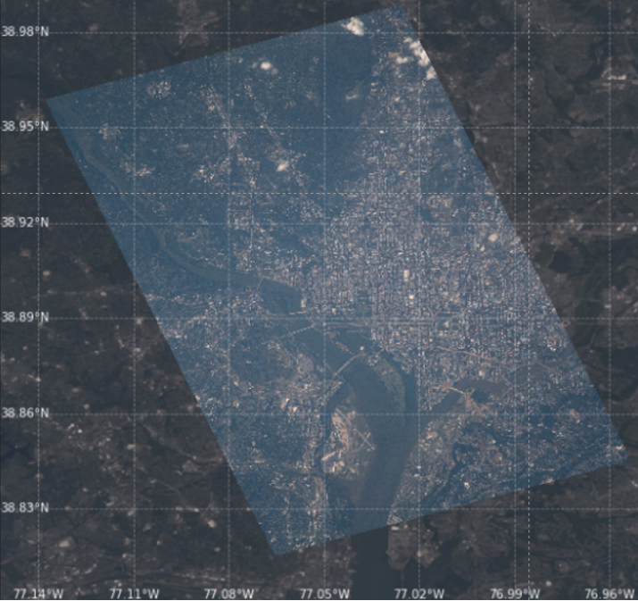 |
Find My Astronaut Photo
Alex Stoken, Kent Fisher CVPR Image Matching Workshop, 2023 slides / pdf / talk Geolocate astronaut photography of Earth via pairwise matching with reference satellite imagery. |
| 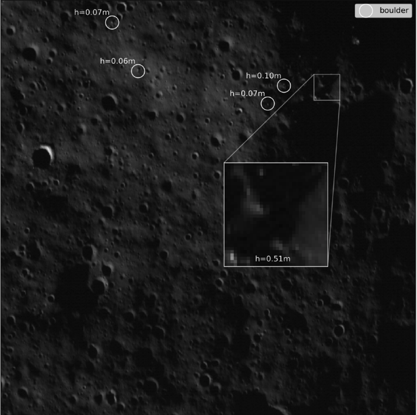 |
Automated Boulder Counting
Alex Stoken, Andrew Britton, Amber Turner, Minna Rubio, Mark Lambert Lunar and Planetary Science Conference, 2023 Search for bounder+shadow to identify small boulders in low solar incidence angle regions (like the lunar South Pole!) |
| 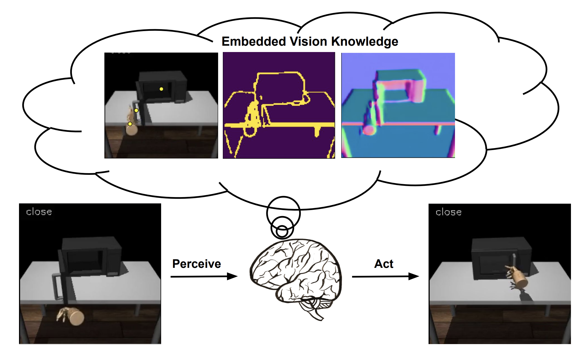 |
[Masters Thesis] DexV2A: Vision Pretraining for Dexterous Manipulation
Alex Stoken Advisors: Kristen Grauman, Priyanka Mandikal The University of Texas at Austin Department of Computer Science, 2022 Pretraining a CNN on low level, structural vision tasks (edge detection, depth estimation) provides benefitial initialization for task-based policy learning. |
| 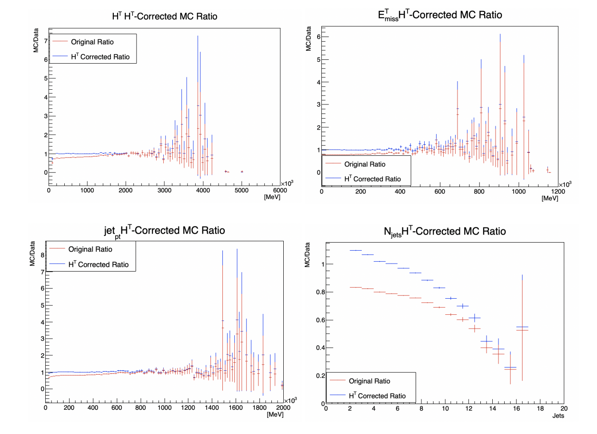 |
[Undergrad Thesis] Background Characterization In The 4top Search At The ATLAS Experiment
Alex Stoken Advisor: Erich Varnes The University of Arizona Department of Physics, 2019 Finding optimal cuts to seperate signal from background in the 4top-quark search at the ATLAS experiment. |
| 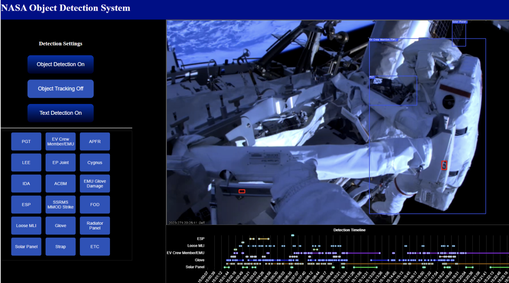 |
NODS (NASA Object Detection System)
Kent Fisher, Mark Lambert, Alex Stoken, Peter Ilhardt, David Mackenzie, Kris Field, Will Watson, Jordan Lindsay NASA JSC Internal Research and Development (IRAD) Program, 2022-2023 Detect and track objects in and around the ISS to enhance operations and mission analysis. Built with very little training data. |
| 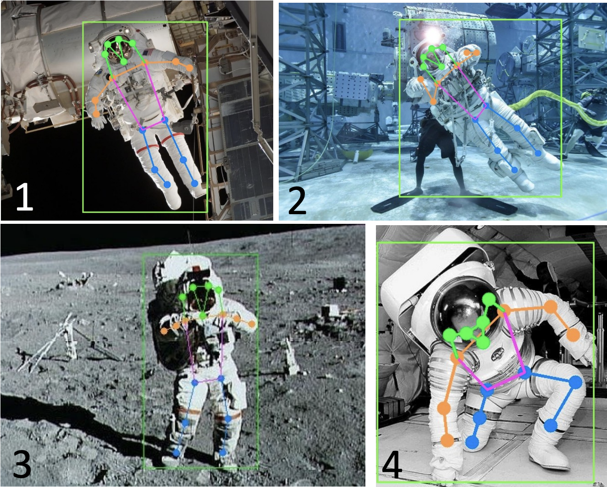 |
EVA Task and 3D Pose Recognition from Video
Sudhakar Rajulu, Han Kim, Kent Fisher, Linh Vu, Alex Stoken, Mark Lambert, Joseph Yao NASA JSC Internal Research and Development (IRAD) Program, 2022 Detect spacesuit joints for downstream pose analysis in NBL and EVA situations. Trained on simulated data only. |

|
Astronaut Photography Interactive Map
Alex Stoken, Cody Boyer presentation See the world through the lens of an astronaut inside the International Space Station! Explore, view, and interact with georeferenced astronaut photgraphy. |
| 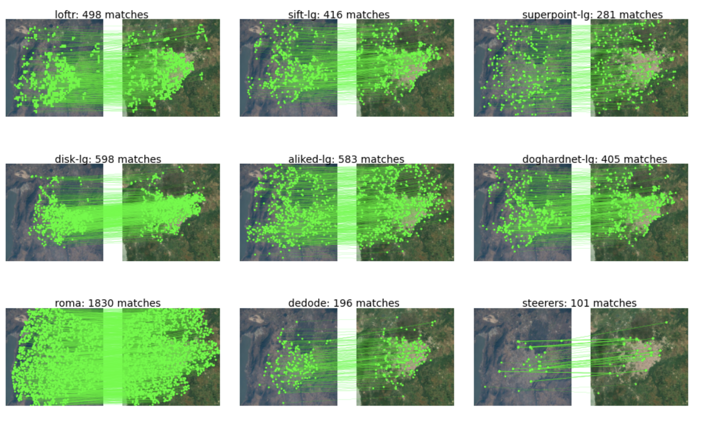 |
Image Matching Models
Gabriele Berton, Alex Stoken, Gabriele Trivigno Unified API for 30 (and growing!) pairwise image matching models. |
| 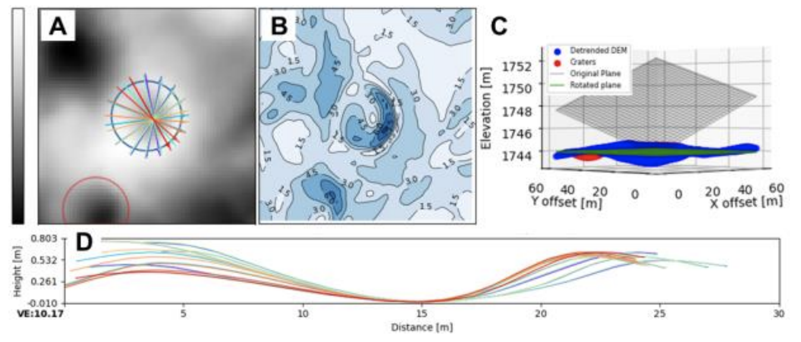 |
Charaterizing Small Craters in the Lunar South Pole Using the Crater Morphology Profile Tool (CAMEO)
Minna Rubio, Peter Ilhardt, Alex Stoken, Sarah Walton, Samuel Lawrence, Lunar and Planetary Science Conference, 2024 Methods for detrending and profiling craters in the South Pole, plus an analysis of small scale (<40m) crater morphology. |

|
Surface Gravimetry Using Rover Navigation Systems
Chandler Lawson, Peter Ilhardt, Alex Stoken, Michael Evans Lunar and Planetary Science Conference, 2024 Recalibrated accelerometers in rover navigation systems can measure slight changes in gravitational acceleration, which can be used to map lateral variations in subsurface density. |
| Title | Venue |
|---|---|
| Improving Spaceflight Imagery with Machine Learing | The International Workshop on AI-Powered Space |
| Crew Earth Observations (CEO): What's new in Astronaut Photgraphy | POIWG 52 (2023) |
JSC Hackathon, Co-Director, 2021-2023
Reviewer, CVPR, NASA SBIR Phase 1 Proposals
JETS Educational Outreach Group, Leadership Team, 2020-present
I am an avid runner and am currently training for my fourth marathon in Houston in January 2025. I'm tracking my PR evolution with stratfo.
I enjoy playing and watching sports, particularly soccer, volleyball, football, and basketball. I have a rooting interest in Arizona and Chicago based teams.